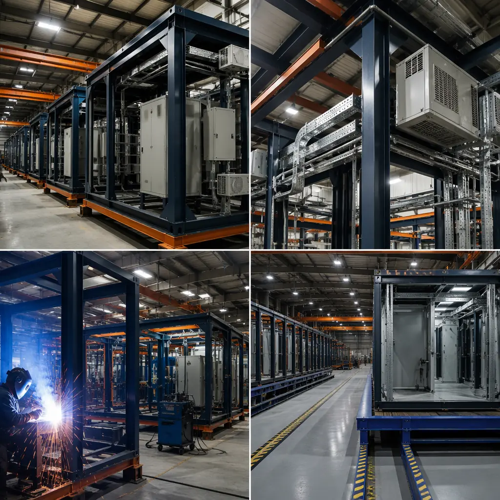
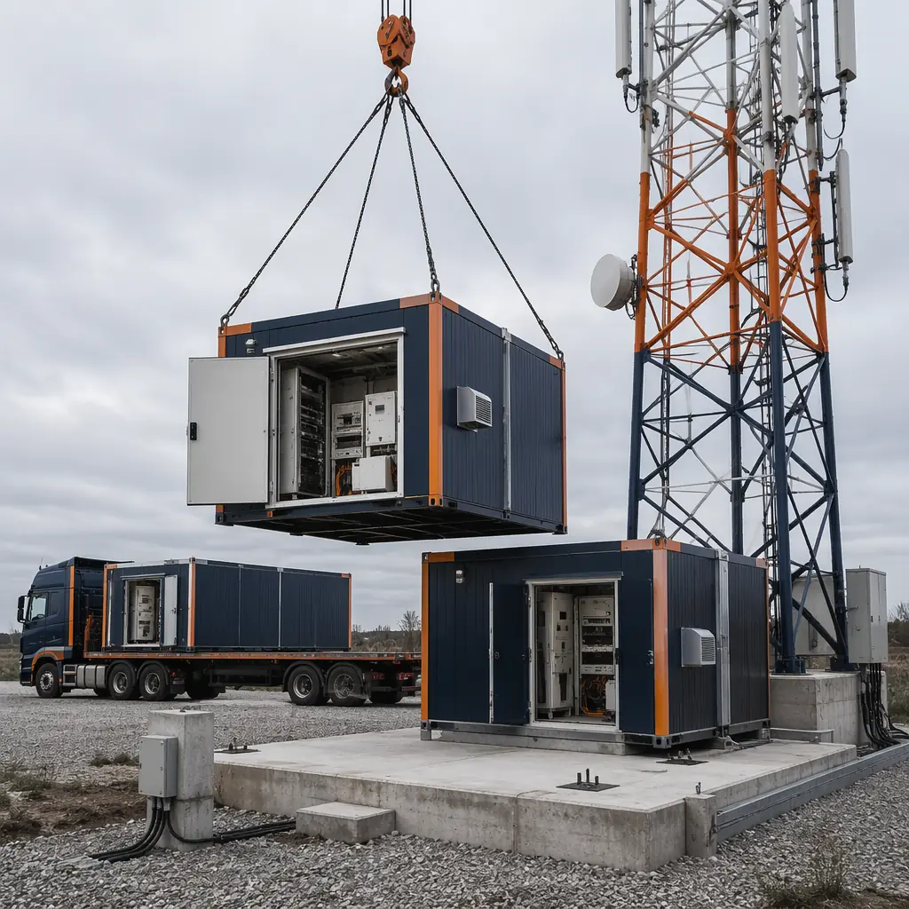
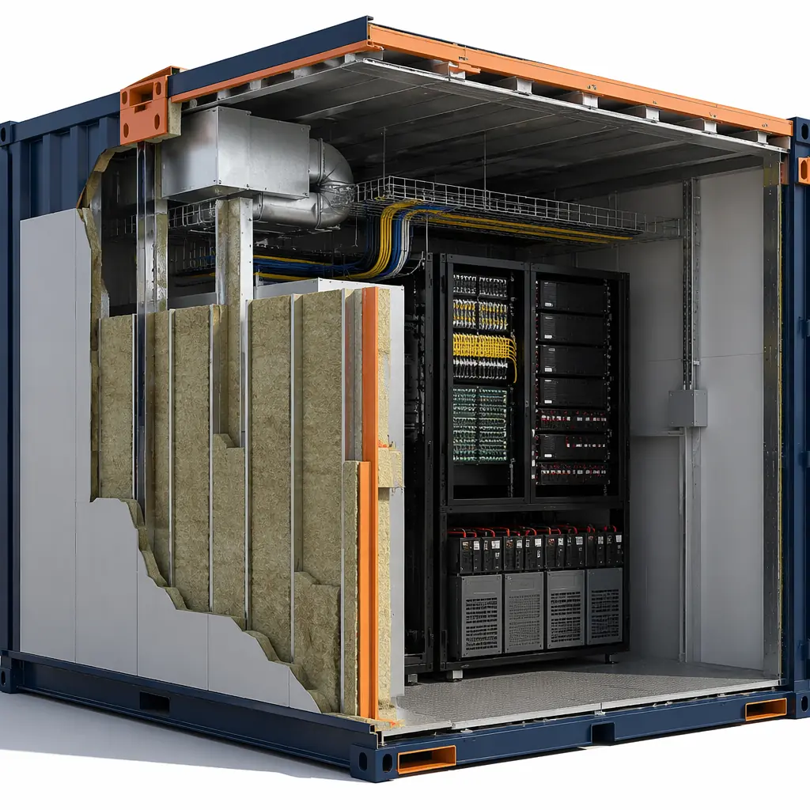
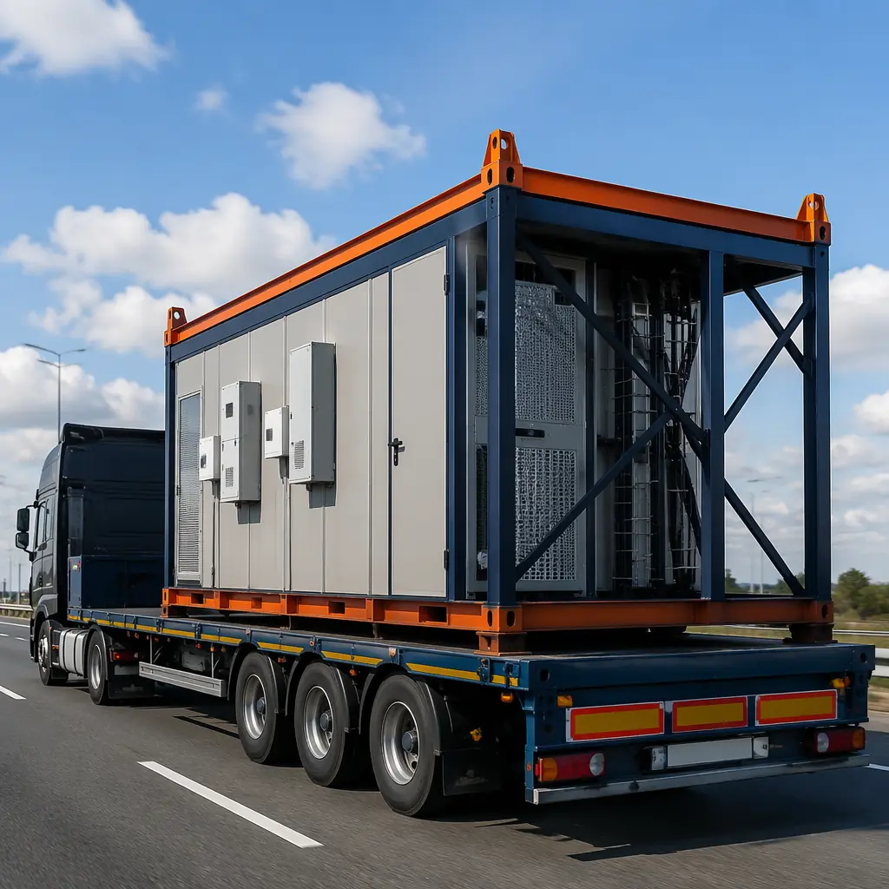

The global 5G infrastructure buildout is the largest civil engineering program since the interstate highway system. Between 2025 and 2030, telecom operators will deploy an estimated 13 million new small-cell sites, edge data centers, and tower-mounted radio units worldwide. Each site needs a shelter — a climate-controlled enclosure housing radio baseband units, power systems, battery backup, and fiber termination panels. Building these shelters conventionally means pouring concrete pads, stick-framing enclosures on-site, and installing HVAC and power systems exposed to weather and theft risk for 8–14 weeks. Modular construction compresses that timeline to 2–3 weeks of site work by delivering a complete, factory-tested shelter on a flatbed truck. For telecom infrastructure operators managing multi-site rollouts, this is not a marginal improvement — it's the difference between hitting 200 sites per year and 500.

Why Traditional Telecom Shelter Construction Is a Bottleneck
Telecom infrastructure deployment has three structural pain points that factory-built shelters solve:
Site labor constraints. A conventional tower base shelter requires electricians for three-phase power and DC rectifier installation, HVAC technicians for precision cooling, carpenters for framing, and low-voltage specialists for fiber termination — five trades that must sequence their work across 8–14 weeks. In rural and highway-corridor deployments, finding all five trades within a 50-mile radius adds weeks of delay per site. A modular shelter arrives with power distribution, HVAC, equipment racks, cable trays, and fire suppression already installed and tested. Site work reduces to foundation prep, module placement, and utility connection — achievable by a 3-person crew in 3–5 days. For more on how factory-built modules eliminate multi-trade sequencing, see our guide to modular turnkey construction.
Security vulnerability during construction. Telecom shelters contain $80,000–$250,000 in active equipment before the building envelope is even weathertight. On a conventional site, that equipment sits exposed for weeks — behind temporary fencing at best. Copper theft from telecom sites costs the industry an estimated $700 million annually according to the Communications Fraud Control Association. Modular shelters are factory-fitted and locked before leaving the production floor. The first time the shelter door opens on-site, the equipment is already installed, tested, and the building is secured.
Thermal management complexity. A fully loaded 5G base station generates 3–8 kW of heat inside a 120–240 sq ft enclosure. Without precise cooling, equipment lifespan drops from 10 years to 3–4. Factory-installed HVAC in a modular shelter is sized, ducted, and commissioned under controlled conditions with documented airflow measurements — not field-guessed by a local contractor working off a one-line diagram. See our analysis of modular building energy efficiency for thermal envelope performance data that applies directly to equipment shelter design.

Telecom Shelter Types That Benefit from Modular Delivery
| Shelter Type | Typical Size | Equipment Load | Modular Advantage |
|---|---|---|---|
| Macro cell base station | 10′ × 20′ | 15–25 kW | Pre-installed DC power plant, rectifier shelves, 48V battery strings |
| Small cell / edge node | 6′ × 8′ | 3–8 kW | Compact factory-tested units, deployable from flatbed in <4 hours |
| Fiber aggregation hut | 8′ × 12′ | 2–5 kW | Factory-terminated fiber patch panels, splice trays, cable management |
| Edge data center | 12′ × 40′ | 30–60 kW | N+1 redundant cooling, pre-commissioned hot/cold aisle containment |
| Generator / battery enclosure | 8′ × 10′ | N/A (storage) | Sound-attenuated, ventilated, fire-rated factory assembly |
Edge data centers represent the convergence point of modular telecom and modular data center construction. For operators planning colocation or edge compute deployments alongside 5G infrastructure, our guide to modular data center construction covers power density, cooling topology, and Tier II/III certification pathways.

Thermal Management — The Silent Killer of Telecom Shelter Economics
Equipment failure in telecom shelters follows a predictable pattern: the HVAC unit that was field-installed by a local contractor fails during a July heatwave, the backup unit can't keep up, internal temperature hits 105°F, and six months later the rectifier shelves and baseband processors start failing at triple the expected rate. The root cause isn't the equipment — it's the building envelope and cooling design that were never tested as an integrated system.
Factory-built modular shelters eliminate this failure chain at the source. The shelter's thermal envelope — wall insulation, vapor barrier, cable penetration sealing, door gaskets — is assembled under factory QA with documented R-values per wall assembly. HVAC units are sized for the specific equipment load, not a generic "tons per square foot" rule of thumb. The complete system is then tested: powered up, loaded to design heat output, and monitored for 24–48 hours with temperature sensors at rack inlet, rack exhaust, and return air plenum. A shelter that leaves the factory at 72°F ±2°F under full load will perform identically on-site, because the thermal system was commissioned as a unit, not cobbled together from subs.
For operators deploying in extreme climates — desert sites with 120°F ambient, arctic sites at −40°F — the factory testing becomes even more critical. MODURA's controlled-environment manufacturing allows cold-weather packages (arctic-grade door seals, insulated cable entries, engine block heaters for backup generators) and hot-climate packages (solar-reflective roof coatings, high-static-pressure condenser fans, expanded battery ventilation) to be validated before the module ever leaves the production floor. The same factory precision that serves our modular cold storage construction projects translates directly to telecom thermal management.

Deployment Economics — Cost Per Site Comparison
Telecom operators budget shelter construction as a line item in their site acquisition cost model. A conventional site might cost $45,000–$65,000 for a basic shelter (excluding active equipment). When the shelter takes 10 weeks instead of 3, however, the operator is also paying carrying costs on the site lease, security guards for an open construction site, and most importantly — losing 7 weeks of revenue from a site that could already be on-air generating $8,000–$15,000 per month in carrier lease revenue.
| Cost Component | Conventional | Modular | Delta |
|---|---|---|---|
| Shelter structure & envelope | $18,000–$25,000 | $16,000–$22,000 | −$2,000 |
| HVAC + thermal management | $8,000–$12,000 | $7,000–$10,000 | −$1,500 |
| Electrical & DC power plant install | $12,000–$18,000 | $10,000–$14,000 | −$3,000 |
| Site labor (multi-trade, weeks) | $14,000–$22,000 | $4,000–$7,000 | −$12,500 |
| Site security during construction | $3,000–$6,000 | $0–$1,000 | −$3,500 |
| Revenue impact (7-week acceleration) | $0 | +$14,000–$26,000 | +$20,000 avg |
The hard-cost savings of $19,000–$22,500 per site are significant. The revenue acceleration of $14,000–$26,000 in early carrier lease revenue per site is transformative at portfolio scale. A 200-site annual rollout program saves $3.8–$4.5 million in hard costs and captures an additional $2.8–$5.2 million in accelerated revenue. For a more detailed breakdown of per-square-foot economics, see our 2026 modular construction pricing guide.

Regulatory Compliance — GR-487, NEBS, and Local Building Codes
Telecom shelters in North America must satisfy a regulatory stack that includes Telcordia GR-487 (environmental requirements for electronic equipment enclosures), NEBS Level 3 (network equipment building system), NFPA 70 (National Electrical Code), and local building codes for wind load, seismic, and snow load. Each of these imposes specific requirements on the building envelope that are far easier to verify in a factory than on a construction site:
- GR-487 thermal cycling. Equipment enclosures must maintain internal temperature within manufacturer specifications through a −40°F to +115°F ambient range. Factory testing with data-logged temperature probes at 12 points inside the shelter provides documented proof of compliance that field-built shelters can only estimate.
- Wind load resistance. Towers are typically sited on elevated terrain for RF coverage, exposing shelters to design wind speeds of 120–150 mph. Modular shelters with welded steel frames and factory-installed anchor bolt patterns are engineered and tested as structural units, not assembled from field-cut lumber.
- Fire resistance. Telecom shelters housing lithium-ion battery banks require 1-hour fire-rated assemblies. Our guide to modular construction fire safety details the fire-rated wall and ceiling assemblies applicable to equipment shelter design.
Integration with Existing Infrastructure
Telecom operators rarely build greenfield sites in isolation. A typical 5G rollout involves colocation on existing tower structures, upgrades to legacy 3G/4G shelters, and new edge compute nodes that must interoperate with existing fiber backhaul. Modular shelters simplify this integration because the shelter design can accommodate known interface points — fiber entry ports sized for specific cable counts, DC power busbars pre-configured for the rectifier capacity of an adjacent legacy site, equipment rack spacing matched to the operator's standard 19-inch or 23-inch mounting pattern.
For operators who have already invested in modular data center capacity, the same factory that produces telecom shelters can produce edge data center modules with identical utility interfaces, door hardware, and security systems — reducing the training and maintenance burden across the entire infrastructure portfolio. Our guide to modular government and municipal buildings illustrates how standardized modular designs reduce lifecycle costs across multi-site programs — the same principle applies at telecom scale.
Is Modular Right for Your Telecom Build?
Modular telecom shelters deliver the strongest ROI when your deployment meets these conditions:
- Multi-site rollout — building 20+ sites makes the factory setup cost disappear into per-unit savings
- Equipment security critical — high-theft areas or remote sites where conventional construction exposes equipment for weeks
- Extreme climate deployment — desert, arctic, or tropical sites where field HVAC commissioning is unreliable
- Standardized equipment configuration — consistent rack layouts, power architecture, and cooling topology across your network
- Revenue time-to-market pressure — every week of accelerated deployment captures carrier lease revenue
MODURA has delivered over 500 projects across 18 countries, with a combined annual production capacity of 4,000 modules from four ISO 9001 and ISO 14001 certified factories. The same manufacturing precision that produces hospital wings and data center modules applies to every telecom shelter — ±2mm fabrication tolerance, workstation-level quality inspection, and full-system factory commissioning before the module ever leaves the production floor. If you're planning a telecom infrastructure rollout, we can provide a preliminary timeline and per-site cost estimate based on your equipment configuration and site count.